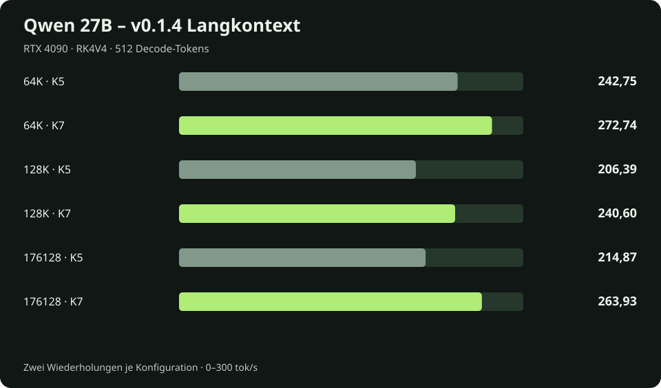
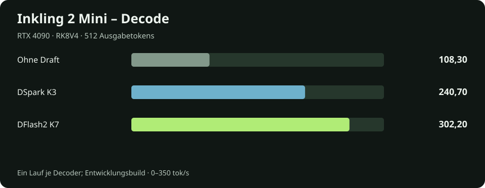

RTX 4090 LLM-Benchmarks
Messwerte mit nachvollziehbarer Methodik und klaren Einschränkungen.
Qwen3.8-27B IQ3_S: reale Anfragen
RTX 4090, CUDA 13.4, DFlash2 K=5, 30.–31. Oktober 2026. 1.831 abgeschlossene Anfragen; 146,6 Token/s Median Decode, 215,5 Token/s P90, 2.345 Token/s Median Long-Prefill (316 Anfragen). Keine isolierte DFlash2-Beschleunigung, MTP und Vision nicht gemessen.
Originalmethodik (EN)Swift 1.5: Einzelmessungen
Token/s; Skala 0–250. Einzelbeobachtungen, keine Mittelwerte.
Kontrollierte Long-Context-Tests
| Kontext | v0.1.3 | Kandidat | Delta |
|---|---|---|---|
| 32K | 262,78 | 260,46 | −0,88 % |
| 64K | 245,67 | 250,22 | +1,85 % |
| 128K | 214,29 | 220,86 | +3,07 % |
Token/s, Entwicklungskandidat 859d76b7 mit Standardwerten gegen v0.1.3, 512 Ausgabetoken, zwei Wiederholungen je Arm. Frühere kürzere Tests zeigten Regressionen. Keine Qualifizierung des exakten v0.1.4-Binaries und kein allgemeiner Geschwindigkeitsvorteil.
Vollständiger A/B-Bericht (EN)Selbst messen
Hardware, Treiber, Modell, Quantisierung, Prompt, Cache und Sampling konstant halten. TTFT, Prefill, Decode, VRAM und Ergebnisqualität getrennt erfassen. Vergleichsmessungen mit anderen Engines stehen noch aus.
Benchmark beitragenNeue Bonsai-2.5-Messungen mit v0.1.4
RTX 4090, exakt veröffentlichtes Benchmark-Binary, MTP K=3 mit N-Gram-Copy-Defaults, rk4v4, 32K Kontext, 2.048 Eingabe- und 128 Decode-Token, zwei Messwiederholungen, ein Warmup.
| Artefakt | Prefill tok/s | Decode tok/s | Dateigröße |
|---|---|---|---|
| PTQ1_0 | 4.635,36 | 291,69 | 6,17 |
| PQ2_0 | 6.295,90 | 323,88 | 7,37 |
Kurze Engine-Messung, keine HTTP-Serving-Rate, kein Vergleich der Modellqualität oder Nachweis eines allgemeinen Geschwindigkeitsvorteils.
v0.1.4 Draft-Width-Messreihe
Huihui IQ3_S, 2.048 Eingabe- und 128 Decode-Token, zwei Wiederholungen, 32K Kontext, rk4v4, N-Gram-Copy deaktiviert.
| Backend | Prefill tok/s | Decode tok/s | Akzeptanz | Gewichte + Runtime (GiB) |
|---|---|---|---|---|
| none | 3.874,13 | 70,38 | — | 11,88 |
| DFlash2 3 | 3.805,45 | 201,93 | 93,07% | 14,78 |
| DFlash2 5 | 3.766,16 | 257,13 | 85,83% | 14,78 |
| DFlash2 7 | 3.729,58 | 326,41 | 88,00% | 14,79 |
| DFlash2 9 | 3.819,98 | 269,33 | 74,50% | 14,79 |
| MTP 3 | 3.799,12 | 200,31 | 89,42% | 12,67 |
| MTP 5 | 3.766,82 | 242,59 | 85,83% | 12,68 |
Die kurzen synthetischen Engine-Tests begünstigen diese konkrete Draft-Akzeptanz. K=7 war hier am schnellsten, K=9 langsamer. Kein allgemeiner Speedup und kein Qualitätsvergleich.
Live-Monitoring mit NInfer
GPU-Auslastung, VRAM, Temperatur, Leistung, Decode/Prefill, DFlash2-Akzeptanz und KV-Belegung direkt im Browser. Das Panel ist in ninfer-serve integriert und benötigt keinen zusätzlichen Dienst.
v0.1.4: Langkontext und Coding
Kontrollierte Engine-Messungen, RTX 4090, 512 Decode-Tokens, zwei Wiederholungen pro Zelle; Prefill 4096, N-Gram aus.

| Draft | 64K | 128K | 176128 |
|---|---|---|---|
| K5 | 242.75 | 206.39 | 214.87 |
| K7 | 272.74 | 240.60 | 263.93 |
| K9 | 247.57 | 202.86 | 241.25 |
| K11 | 258.70 | 215.03 | 228.06 |
| K15 | 242.20 | 189.58 | 229.13 |
K7 gewinnt beim Decode in allen drei Kontexten. Separate Kopier-/Refactoring-Aufgaben mit N-Gram 15 erreichten im Mittel 568,1 tok/s (256,7 ohne), jeweils 4/6 exakt korrekte Ausgaben. Concurrent-Prefill reduzierte die kurze Anfrage-TTFT von 21,28 auf 1,16 s; die Gesamtzeit des Anfragepaars blieb praktisch unverändert. Keine allgemeine Leistungszusage.
Inkling 2 Mini: HumanEval (Rank-1)

| Messgröße | Original | Rank-1 |
|---|---|---|
| HumanEval pass@1 | 160/164 (97.56%) | 160/164 (97.56%) |
| Mittlerer Decode (tok/s) | 303.61 | 288.30 |
RTX 4090, RK8V4, DFlash2 K7, 8192 Kontext, Temperatur 0, eine Ausgabe pro Aufgabe. Chat-adaptiertes HumanEval-Protokoll mit offiziellen Tests, kein kanonischer Leaderboard-Score. Synthetischer Retrieval-Test mit 250.006 Eingabetokens: 3/3 Schlüssel; kein allgemeiner Long-Context-Qualitätsnachweis. Messungen am experimentellen Entwicklungsbuild; v0.1.8 wurde separat per GPU-Smoke-Test qualifiziert.
Modellkarte, Quellen und Methodik